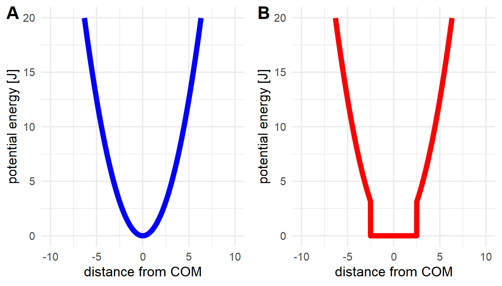

Additional Settings
Restraints
Danger
This section only applies if you are running your simulations with openMM. Should you run your simulations using CHARMM, it will not apply the restraints and give no warning about it.
\(\texttt{TRANSFORMATO}\) supports two types of restraints: automatic and manual restraints.
Automatic Restraints
To activate automatic restraints for your ligand, add
simulation:
restraints: "auto"
to your config.yaml. This wil restrain your ligand in its original position using a harmonic potential of the form \(E=0.5k \cdot (r-r_0)²\) (where \(r\) is the current distance,:math:r_0` the initial distance, and \(k\) the force constant), applied within the centers of mass of your ligand and the surrounding protein structure, keeping these two vaguely fixed.
You may specify further keywords:
Options for automatic restraints
- restraints: auto
- k=[int]
optional: Defines the spring constant used for force calculations. Default is 3
- extremities=[int]
optional: If used, \(\texttt{TRANSFORMATO}\) will not restraint the entire common core but rather look for [int] extremities. These are then restrained to the surrounding protein carbon-alphas.
- shape=["harmonic","flatbottom"]`
optional: Defines the shape of the energy potential.
The potential energy term for the two forms is given as:
harmonic: \(E=0.5k \cdot (r-r_0)²\)
flatbottom: \(E=k \cdot step(|r-r_0|),thresh) \cdot (r-r_0)²,\)
where \(r\) is the current distance, \(r_0\) the initial distance, and \(k\) the force constant. The step function returns 0 until the threshold \(thresh\) (defined as
wellsizeby the config.yaml) has been surpassed, after which it returns 1. As such, the flat-bottom potential is essentially a harmonic potential, where the energy within the "well" is zero. Note that thewellsizeacts like a radius, meaning it extends in all directions from its origin.
Figure: The difference between a harmonic (A) and flat-bottom (B) potential. While both allow more movement closer to the restraint origin, a flat-bottom potential effectively allows defining a fixed sampling area that the ligand can move in without hindrance, but cannot leave (assuming a strong enough value for k).
- scaling
optional: If present, the k - Value of the force is linearly scaled in the first four intermediate states (
intst1: 0; intst2: 0.25; intst3: 0.5; intst4: 0.75; intst5: 1.0)
- wellsize [float]
optional: Only takes effect in a flat-bottom potential. Defines the wellsize in nanometers. Default is 0.1 nm.
A full entry in your config.yaml might thus look like this:
restraints: "auto k=10 extremities=3 shape=harmonic scaling"
Caution
Be somewhat sure of what your structure looks like, and do a sanity check on the generated restraints before production. As all restraints only act on the common core, setting an arbitrarily high number of extermities can lead to strange results
It should be noted that this means that a small file called restraints.yaml is created in your intst* - folders. These have the following structure:
system:
structure:
tlc: LIG # same as in the config.yaml, but only one structure (as only one relevant)
simulation:
restraints: "auto" # same as in config.yaml
ccs: # this represents an array of your common core, upon which restraints can be applied
- C1
- C2
- H2
intst:
scaling:0.8 # for non-immediate switches, how far along the scaling is. Only relevant for harmonic potentials.
It is not recommended to manually edit these files, as they are automatically created for each intermediate state.
Manual Restraints
To activate manual restraints for your ligand, add
simulation:
restraints: "manual"
to your config.yaml. Below, you may now specify an arbitrary number of restraints using the MDAnalysis selection syntax :
simulation:
restraints: "manual"
manualrestraints:
restraint1:
shape: "harmonic"
group1: "resname LIG and type C"
group2: "protein and type CA"
k: 30
r0: 2.41
You may define as many restraints as you like:
Code example with multiple restraints:
simulation:
restraints: "manual"
manualrestraints:
restraint1:
shape: "harmonic"
group1: "resname LIG and type C"
group2: "protein and type CA"
restraint2:
shape: "flatbottom"
group1: "resname LIG and type C"
group2: "protein and type CA"
restraint3:
shape: "harmonic"
group1: "resname LIG and name C14"
group2: "sphlayer 5 15 name C14 and protein and type CA"
Note that the individual restraints all need to have distinct names (restraint1, restraint2 etc.). It is common that they are numbered, but not required - they simply need to adhere to the yaml syntax.
Options for manual restraints
- restraints: manual
- manual-restraint
You may freely choose the name of the restraint here. It may be useful to provide a ‘speaking’ name, as this will allow identification later.
- shape=["harmonic","flatbottom"]'
Shape of the energy potential. Default is “harmonic”. See automatic restraints for details.
- group1,group2=[MDAnalysis selection string]
Defines which Common Core atoms are members of group1 or group2. Please note that group1 must be the ligand, and group2 the protein.
- k=[int]
(optional): Defines the harmonic force constant. Default is 3.
- wellsize=[float]
(optional): Defines the wellsize for flat-bottom restraints (unit is nanometers). Defaults to 0.1 nm.
As with automatic restraints, even manually specified restraints will never act on atoms not in the common core, as this would lead to nonsensical energy calculations.
Hydrogen Mass Repartitioning (HMR)
To further accelerate MD simulations it is possible to reweight the masses of the hydrogen atoms and thus
reduce the vibrational frequency of the corresponding hydrogen-heavy atom bond. When using cons: HBonds
one can safely increase the time step to 4 fs.
To use HMR one can either check the box in the last step of the CHARMM-GUI solution builder while creating the
system or one can use the parmed
action tool (also available in the fep conda environment)
psf = pm.charmm.CharmmPsfFile("step3_input_orig.psf")
pm.tools.actions.HMassRepartition(psf).execute()
psf.save("step3_input.psf", overwrite = True)